신재생에너지발전설비기사(구) (2018-03-04 기출문제)
1과목: 임의 구분
1. 피뢰소자에 대한 설명으로 틀린 것은?
- 피뢰소자의 접지측 배선은 되도록 짧게 함
- 낙뢰를 비롯한 이상전압으로부터 전력계통을 보호함
- 태양전지 어레이의 보호를 위해 모듈마다 설치함
- 동일회로에서도 배선이 긴 경우에는 배선의 양단에 설치하는 것이 좋음
(정답률: 71%)

2. 태양전지의 개방전압에 대한 설명 중 틀린 것은?
- 태양전지로부터 얻을 수 있는 최대 전압이다.
- 태양전지 흡수층을 구성하는 물질의 밴드갭 에너지에 따라 변화한다.
- 출력전력이 최대일 때 태양전지의 두 전극 사이에서 발생하는 전위차에 해당한다.
- 태양전지의 두 전극 사이에 무한대의 부하를 연결한 경우, 두 전극 사이의 전위차다.
(정답률: 47%)
3. 지열발전에서 지열유체가 증기와 열수인 경우 지열유체를 증기분리기로 유도하여 증기와 열수를 분리하고 분리한 증기로 터빈을 가동시켜 발전하는 방식은?
- 증기발전
- 싱글플래시발전
- 더블플래시발전
- 바이너리사이클발전
(정답률: 54%)
4. 독립형 태양광발전시스템의 응용 예로 가장 부적합한 것은?
- 위성용 전원
- 양식장 부표
- 태양광 자동차
- MW급 태양광발전소
(정답률: 79%)
5. 에너지가 1.08eV인 광자의 파장은? (단, Planck상수＝4.136×10-15eVs, c＝2.998×108m/s)
- 0.9㎛
- 1.15㎛
- 1.4㎛
- 1.65㎛
(정답률: 58%)
6. 변압기를 사용하여 220V, 60Hz 교류전압을 12V의 교류전원으로 바꾸려고 한다. 이 변압기 1차 코일의 권선수가 350회일 때, 2차 코일의 권선수는?
- 약 19회
- 약 25회
- 약 56회
- 약 500회
(정답률: 73%)
7. 태양전지 모듈 중 박막 계열의 모듈이 아닌 것은?
- a-Si 모듈
- CIS 모듈
- CdTe 모듈
- Multi-crystalline 모듈
(정답률: 74%)
8. 태양광을 이용한 독립형 전원시스템용 축전지 선정 시 고려사항으로 틀린 것은?
- 부하에 필요한 입력전력량을 검토한다.
- 설치예정 장소의 일사량 데이터를 조사한다.
- 축전지의 기대수명에서 방전심도[DOD]를 설정한다.
- 설치장소의 일조량을 고려하여 부조일수를 산정하지 않는다.
(정답률: 84%)
9. 피뢰기가 구비해야 할 조건 중 틀린 것은?
- 속류의 차단능력이 충분할 것
- 충격 방전 개시 전압이 낮을 것
- 상용주파 방전 개시 전압이 높을 것
- 방전내량이 작으면서 제한전압이 높을 것
(정답률: 70%)
10. 교류의 파형률이란?
- 실효값/평균값
- 평균값/실효값
- 실효값/최대값
- 최대값/실효값
(정답률: 79%)
11. 그림과 같은 인버터 회로방식의 명칭으로 옳은 것은?
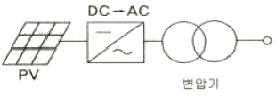
- 트랜스리스 방식
- 고주파 변압기 절연방식
- on-line 인버터 절연방식
- 상용주파 변압기 절연방식
(정답률: 78%)
12. 다음 그림은 태양광발전시스템의 독립형 시스템을 나타내고 있다. A의 명칭은?
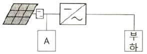
- 축전지
- 어레이
- 컨버터
- 인버터
(정답률: 81%)
13. 계통연계형 태양광발전시스템에서 주파수의 변동을 검출하지 않고 전압 또는 전류의 급변현상만을 이용하여 단독운전을 검출하는 방식은?
- 부하변동방식
- 주파수 시프트방식
- 무효전력 변동방식
- 주파수 변화율 검출방식
(정답률: 66%)
14. 다음 [보기]의 ( )에 알맞은 내용은 무엇인가?
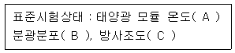
- A：20℃, B：AM 1.0, C：1000W/m2
- A：20℃, B：AM 1.5, C：1200W/m2
- A：25℃, B：AM 1.5, C：1200W/m2
- A：25℃, B：AM 1.5, C：1000W/m2
(정답률: 86%)
15. 다음 [보기]의 태양광 발전설비용 인버터 중 변압기형 인버터의 절연저항 측정순서가 옳은 것은?
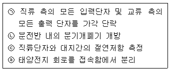
- ㉣ → ㉠ → ㉡ → ㉢
- ㉠ → ㉡ → ㉣ → ㉢
- ㉡ → ㉣ → ㉢ → ㉠
- ㉣ → ㉡ → ㉠ → ㉢
(정답률: 73%)
16. STC 조건하에서 다음 표와 같이 모듈의 특성이 주어질 때 정격출력은 약 몇 W 인가?
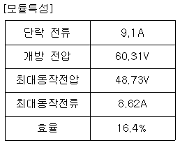
- 68.88
- 90.20
- 420.⑤
- 550.03
(정답률: 56%)
17. 인버터의 자동운전 정지 기능에 대한 설명 중 틀린 것은?
- 흐린 날이나 비오는 날은 운전을 정지한다.
- 일사량이 기동전압 이하일 경우 자동정지 한다.
- 태양광 모듈의 출력을 감시하여 자동으로 운전한다.
- 태양광 모듈의 출력이 적어 인버터 출력이 거의 0으로 되면 대기상태가 된다.
(정답률: 78%)
18. 전천일사강도 Ig와 직달일사강도 Id 및 산란일사강도 Is을 옳게 나타낸 식은? (단, θ는 태양의 고도각이다.)
- Ig=Id sinθ+Is
- Is=Id sinθ+Ig
- Ig=Is sinθ+Id
- Id=Is sinθ+Ig
(정답률: 61%)
19. 1W·s와 동일한 단위는?
- 1J
- 1kWh
- 1kg·m
- 860kcal
(정답률: 80%)
20. 수용가 전력요금 절감 및 전력회사 피크전력 대응으로 설비투자비를 절감할 수 있는 축전지 부착 계통연계형 시스템은?
- 방재 대응형
- 부하 평준화 대응형
- 계통 안정화 대응형
- 계통 평준화 대응형
(정답률: 54%)
2과목: 임의 구분
21. 아스팔트 방수층, 개량 아스팔트 시트 방수층, 합성고분자계 시트 방수층 및 도막 방수층 등 불투수성 피막을 형성하여 방수하는 공사를 총칭하는 용어로 옳은 것은?
- 실링방수
- 멤브레인방수
- 구체침투방수
- 벤토나이트방수
(정답률: 53%)
22. 태양광발전시스템 부지선정 시 현장의 환경조건 조사사항으로 틀린 것은?
- 빛 장해
- 가로등 밝기
- 염해, 공해의 유무
- 동계적설, 결빙, 뇌해 상태
(정답률: 80%)
23. 태양광발전시스템 출력이 32000W, 모듈 최대 출력이 250W, 모듈의 직렬 장수가 16장일 때 모듈의 병렬 수는?
- 7
- 8
- 9
- 10
(정답률: 77%)
24. 분산형 전원의 저압연계가 가능한 기준 용량은 몇 kW 미만인가?
- 500
- 1000
- 1500
- 2000
(정답률: 44%)
25. 다음 전기도면의 기호 중 전열기는?
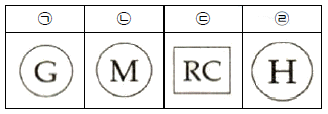
- ㉠
- ㉡
- ㉢
- ㉣
(정답률: 74%)
26. 태양광발전사업을 하고자 하는 경우 일반적으로 경제성 분석평가를 실시하는데 경제성 분석기준으로 틀린 것은?
- 순현가
- 할인율
- 비용 편익비
- 내부 수익률
(정답률: 72%)
27. 태양광발전소 내 남북으로 설치된 어레이 최적경사각이 30°일 때 어레이 경사각을 최적 경사각보다 10° 낮출 경우, 나타나는 효과로 틀린 것은?
- 발전량이 줄어든다.
- 대지 이용률이 감소한다.
- 어레이 간 이격거리가 짧아진다.
- 어레이 간 음영 길이가 줄어든다.
(정답률: 70%)
28. 1000만원을 투자하여 첫 해에는 400만원, 둘째 해에는 800만원의 현금유입이 있을 때, 자본비용이 10%라면 이 투자안의 순현가[NPV]는?
- 10.4만원
- 24.8만원
- 62.5만원
- 82.8만원
(정답률: 44%)
29. 다음 조건에서 월간 발전량(kWh/월)은? (단, 종합설계계수는 0.66을 적용하며 기타 조건은 무시한다.)
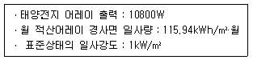
- 695.26
- 826.42
- 995.72
- 713.56
(정답률: 60%)
30. SPD[Surge Protective Device]를 시험에 의해 분류할 경우 클래스 Ⅰ등급 시험의 파형 크기(파두장/파미장)와 종류로 옳은 것은? (단, 직격뢰를 가정한 경우이다.)
- 8/20㎲의 전류파형
- 8/20㎲s의 전압파형
- 10/350㎲의 전류파형
- 10/350㎲의 전압파형
(정답률: 52%)
31. 분산전원의 저압 계통의 병입 시 순시 전압변동률이 최대 몇 %를 초과하지 않아야 하는가?
- 3
- 4
- 5
- 6
(정답률: 31%)
32. 단독운전 방지 기능 중 능동적인 방법이 아닌 것은?
- 부하변동방식
- 유효전력 변동방식
- 주파수 시프트방식
- 주파수 변화율 검출방식
(정답률: 59%)
33. 태양광발전시스템 사업을 할 경우 경제성은 사업에 중요한 부분을 차지한다. 경제성 용어인 IRR의 의미는 무엇인가?
- 투자수익률
- 순현재가치
- 내부수익률
- 예산조달비용
(정답률: 62%)
34. 공사 설계도서에 필수항목으로 가장 거리가 먼 것은?
- 배치도
- 평면도
- 입체도
- 시방서
(정답률: 71%)
35. 전기사업의 허가를 받는 경우 시·도지사에게 받을 수 있는 발전시설의 최대 용량(kW)은?
- 1000
- 2000
- 3000
- 4000
(정답률: 64%)
36. 계절별 태양의 남중고도가 가장 낮은 시기는?
- 춘분
- 추분
- 동지
- 하지
(정답률: 78%)
37. 도면에 사용되는 선의 종류에서 중심선, 절단선, 기준선 등의 용도로 사용되는 선의 종류는?
- 굵은실선
- 가는실선
- 이점쇄선
- 일점쇄선
(정답률: 67%)
38. 도면의 작성 및 관리에 필요한 정보를 모아서 기재한 것을 무엇이라 하는가?
- 범례
- 시방서
- 표제란
- 도면목록표
(정답률: 66%)
39. 전기사업용 전기설비의 공사계획 인가 또는 신고 시 산업통상자원부의 인가가 필요한 발전소 출력 기준은?
- 10000kW 이상
- 30000kW 이상
- 50000kW 이상
- 100000kW 이상
(정답률: 47%)
40. 1000m2 면적에 하나의 어레이를 구성하여 태양광발전시스템을 설치할 때, 모듈 효율 15%, 일사량 500W/m2일 때 생산되는 전력(kW)은? (단, 기타조건은 무시한다.)
- 75
- 750
- 7500
- 75000
(정답률: 68%)
3과목: 임의 구분
41. 가공전선로에서 발생할 수 있는 코로나 현상의 방지 대책이 아닌 것은?
- 복도체를 사용한다.
- 가선금구를 개량한다.
- 선간거리를 크게 한다.
- 바깥지름이 작은 전선을 사용한다.
(정답률: 70%)
42. 감리원은 공사가 시작된 경우에 공사업자로부터 착공신고서를 제출받아 적정성 여부를 검토 후 며칠 이내에 발주자에게 보고하여야 하는가?
- 5일
- 7일
- 10일
- 14일
(정답률: 70%)
43. 착공신고 보고서류에 포함할 사항이 아닌 것은?
- 시공 상세도
- 공사 시작 전 사진
- 공사도급계약서 사본 및 산출내역서
- 현장기술자 경력확인서 및 자격증 사본
(정답률: 44%)
44. 태양광발전시스템 구조물의 설치공사 순서를 보기에서 찾아 옳게 나열한 것은?
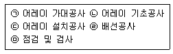
- ㉡ → ㉠ → ㉢ → ㉣ → ㉤
- ㉠ → ㉡ → ㉢ → ㉣ → ㉤
- ㉣ → ㉡ → ㉠ → ㉢ → ㉤
- ㉣ → ㉠ → ㉡ → ㉢ → ㉤
(정답률: 80%)
45. 비상주감리원의 업무 범위가 아닌 것은?
- 기성 및 준공검사
- 설계 변경 및 계약금액 조정의 심사
- 감리업무 수행계획서, 감리원 배치계획서 검토
- 정기적으로 현장 시공상태를 종합적으로 점검·확인·평가하고 기술지도
(정답률: 38%)
46. 감리원이 작성하는 전력시설물의 유지관리지침서 내용에 포함되지 않는 것은?
- 시설물 유지관리방법
- 시설물의 규격 및 기능설명서
- 시설물의 시운전 결과 보고서
- 시설물 유지관리기구에 대한 의견서
(정답률: 51%)
47. 가공전선로에서 전선의 이도에 관한 설명으로 틀린 것은?
- 이도는 지지물의 높이를 결정한다.
- 이도는 온도 변화의 영향과 무관하다.
- 이도가 크면 전선이 진동하므로 지락 사고의 우려가 있다.
- 이도가 작으면 전선의 장력이 증가하여 단선의 우려가 있다.
(정답률: 75%)
48. 태양전지 모듈 등의 시설 방법으로 틀린 것은?
- 충전부분은 노출되지 아니하도록 시설
- 전선은 공칭단면적 2.5mm2 이상의 연동선 또는 이와 동등 이상의 세기 및 굵기의 것
- 태양전지 모듈에 접속하는 부하측의 전로에는 그 접속점에 근접하여 개폐기 기타 이와 유사한 기구를 시설
- 태양전지 모듈을 병렬로 접속하는 전로에는 그 전로에 단락이 생긴 경우에 전로를 보호하는 보호계전기를 시설
(정답률: 53%)
49. 접지공사 종류와 최대 접지저항 값이 옳게 연결된 것은?(관련 규정 개정전 문제로 여기서는 기존 정답인 2번을 누르면 정답 처리됩니다. 자세한 내용은 해설을 참고하세요.)
- 제1종 - 20Ω, 제3종 - 100Ω
- 제1종 - 10Ω, 특별 제3종 - 10Ω
- 제1종 - 10Ω, 특별 제3종 - 100Ω
- 제3종 - 50Ω, 특별 제3종 - 100Ω
(정답률: 74%)
50. 태양전지 모듈의 취부방향은 대부분 좌우가 긴 횡방향으로 설치되나, 상하가 긴 종방향으로 설치하는 이유로 틀린 것은?
- 적설지대에 적합함
- 세정효과가 좋아짐
- 발전부지가 적게 됨
- 먼지, 꽃가루 등이 많은 지역에 적합함
(정답률: 67%)
51. 감리원이 공사업자로부터 물가변동에 따른 계약금액 조정요청을 받은 경우에 작성하여 제출하도록 되어 있는 서류가 아닌 것은?
- 물가변동조정 요청서
- 계약금액 조정 요청서
- 안전관리비 집행근거 서류
- 품목조정률 또는 지수조정률에 대한 산출근거
(정답률: 76%)
52. 인버터의 시험항목 중에서 독립형 및 연계형에서 모두 시험해야 하는 정상특성시험에 속하지 않는 것은?
- 효율시험
- 온도상승시험
- 누설전류시험
- 부하차단시험
(정답률: 49%)
53. 책임 설계감리원이 설계감리의 기성 및 준공을 처리할 때 발주자에게 제출하는 서류 중 감리기록서류에 해당하지 않는 것은?
- 설계감리일지
- 설계감리요청서
- 설계감리지시부
- 설계감리 결과보고서
(정답률: 37%)
54. 태양전지 모듈과 인버터간의 배선에 대하여 옳게 설명한 것은?
- 태양전지 어레이의 지중배선은 1.0m 이상의 깊이로 매설한다.
- 태양전지 모듈 접속용 케이블은 반드시 극성 표시를 하지 않아도 된다.
- 접속함에서 인버터까지의 배선은 전압강하율 5% 이하로 할 것을 권장하고 있다.
- 태양전지 모듈 사이의 배선은 2.5mm2 이상의 전선을 사용하면 단락전류에 견딜 수 있다.
(정답률: 60%)
55. 배전선로의 장주에 전선로를 병가 할 경우 전선로의 순위를 나타낸 것으로 옳은 것은?
- 통신선은 중성선 또는 저압 전선로의 하단에 배치한다.
- 전용 전선로 또는 이와 유사한 전선로는 일반 전선로보다 하단에 배치한다.
- 원거리에 전송하는 전선로는 근거리에 전송하는 전선로보다 하단에 배치한다.
- 서로 다른 전압의 전선로를 동일 지지물에 병가 할 경우에는 높은 전압의 전선로를 하단에 배치한다.
(정답률: 67%)
56. 태양전지 모듈의 연결공사에 대한 설명으로 틀린 것은?(오류 신고가 접수된 문제입니다. 반드시 정답과 해설을 확인하시기 바랍니다.)
- 전선의 연결부위는 전선관 내에서 연결해야 한다.
- 금속관 상호 간 및 관과 박스의 접속은 견고하고 전기적으로 완전하게 접속한다.
- 태양전지 모듈 결선 시 Junction Box Hole에 맞는 방수 커넥터를 사용한다.
- 사용전압이 400V 이상인 경우 금속관에는 특별 제3종 접지공사를 한다.
(정답률: 74%)
57. 자가용 전기설비 사용전 검사를 실시하기 전이나 실시한 후에 신청인 및 전기안전관리자 등 검사입회자에게 회의를 통해 설명하고 확인시켜야 할 사항이 아닌 것은?
- 안전작업 수칙
- 준공표지판 설치
- 검사에 필요한 안전자료 검토 및 확인
- 검사결과 부적합 사항의 조치내용 및 개수방법·기술적인 조언 및 권고
(정답률: 48%)
58. 태양전지 모듈은 사업계획서상에 제시된 설치용량의 몇 %를 초과하지 않아야 하는가?
- 101
- 103
- 1⑤
- 110
(정답률: 52%)
59. 분산형전원의 이상 또는 고장 발생 시 이로 인한 영향이 연계된 계통으로 파급되지 않도록 태양광발전시스템에 설치해야 하는 보호계전기가 아닌 것은?(문제 오류로 모두 정답 처리된 문제입니다. 여기서는 가답안인 2번을 누르면 정답 처리 됩니다.)
- 과전압 계전기
- 과전류 계전기
- 저전압 계전기
- 저주파수 계전기
(정답률: 74%)
60. 태양광 발전설비 중 제3종 및 특별 제3종 접지공사를 해야 하는 곳에 해당하지 않는 것은?(관련 규정 개정전 문제로 여기서는 기존 정답인 2번을 누르면 정답 처리됩니다. 자세한 내용은 해설을 참고하세요.)
- 금속배관
- 직류전선로
- 접속함 및 인버터 외함
- 태양전지 패널 및 가대
(정답률: 59%)
4과목: 임의 구분
61. 배전반의 케이블 단말부 및 접속부, 관통부 등의 점검 내용으로 틀린 것은?
- 부하 개폐기의 절연유 누출
- 볼트의 풀림 등에 의한 진동
- 코로나 방전에 의한 과열 냄새
- 곤충 및 설치류 등의 침입 흔적
(정답률: 63%)
62. 계통연계형과 독립형의 태양광 발전용 인버터가 실외형인 경우 IP(방진, 방수)는 최소 몇 등급 이상인가?
- IP20
- IP44
- IP56
- IP57
(정답률: 71%)
63. 태양광발전설비 운영방법과 관련하여 틀린 것은?
- 모듈은 고압 분사기를 이용하여 정기적으로 물을 뿌려준다.
- 모듈 표면의 온도가 높을수록 발전효율이 높으므로 강한 빛을 받도록 한다.
- 구조물 및 전선에 부분적인 발청 현상이 있을 경우 도포 처리를 해 준다.
- 태양광 발전설비의 고장요인이 대부분 인버터에서 발생하므로 정기적으로 정상여부 확인한다.
(정답률: 76%)
64. 태양광발전모듈에 차광이 모듈의 부하로 작용하여 태양광발전시스템의 출력을 저하시킬 경우 조치로 옳은 것은?
- 제너 다이오드를 설치한다.
- 스트링 다이오드를 설치한다.
- 블럭킹 다이오드를 설치한다.
- 바이패스 다이오드를 설치한다.
(정답률: 74%)
65. 자가용전기설비 중 태양광 발전설비의 전력변환장치의 정기검사 항목으로 틀린 것은?
- 윤활유
- 외관검사
- 절연저항
- 절연내력
(정답률: 66%)
66. ( ) 안에 들어갈 내용으로 옳은 것은?
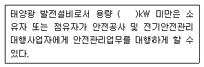
- 500
- 1000
- 1500
- 2000
(정답률: 64%)
67. 태양광발전시스템 구조물의 고장으로 틀린 것은?
- 마찰음
- 핫스팟
- 이상 진동음
- 구조물 변형
(정답률: 70%)
68. 전기안전관리자는 유지관리를 위해서 점검 등 결과가 부적합인 경우 조치 방법으로 틀린 것은?
- 소유자는 전기안전관리자가 안전관리를 위해 부적합 전기설비에 대하여 의견을 제시하는 경우에는 이를 따르지 않아도 된다.
- 전기안전관리자는 전기설비기술기준에 적합하지 아니한 전기설비 중 경미한 전기공사에 대하여 필요할 경우에는 직접 수리할 수 있다.
- 전기안전관리자는 검사 및 점검 결과가 전기설비기술기준에 적합하지 않을 때에는 소유자에게 알려 부적합 전기설비의 수리·개조·보수 등 필요한 조치를 취하도록 하여야 한다.
- 전기안전관리자는 부적합 전기설비에 대한 조치가 취해지기 전에 전기설비의 운용에 따른 안전 확보를 위해 필요하다고 판단되는 경우 전기설비의 사용을 일시정지하거나 제한할 수 있다.
(정답률: 73%)
69. 전기사업 허가신청서에서 신청내용으로 틀린 것은?
- 설치장소
- 사업의 종류
- 사업의 시작일자
- 사업구역 또는 특정한 공급구역
(정답률: 62%)
70. 태양광발전시스템의 인버터 점검 시 조치 내용으로 틀린 것은?
- 상회전 확인 후 정상 시 재운전
- 전자접촉기 교체 점검 후 재운전
- 계통전압 확인 후 정상 시 5분 후 재기동
- 태양전지 전압 점검 후 정상 시 3분 후 재기동
(정답률: 72%)
71. 중대형 태양광 발전용 인버터의 효율 시험 시 교류 전원을 정격 전압 및 정격 주파수로 운전하고 운전 시작 후 최소한 몇 시간 후에 측정하는가?
- 2
- 4
- 6
- 8
(정답률: 75%)
72. 태양전지 소자 - 제3부：기준 스펙트럼 조사강도 데이터를 이용한 지상용 태양전지(PV) 소자의 측정원리(KS C IEC 60904-3)의 적용범위로 틀린 것은?
- 모듈
- 시스템
- 태양전지의 하부 조직
- 보호 덮개가 없는 태양전지는 제외
(정답률: 58%)
73. 태양광발전시스템의 운전 시 확인 요소로 틀린 것은?
- 어레이 구조물의 접지의 연속성 확인
- 태양광발전모듈, 어레이의 단락전류 측정
- 태양광발전모듈, 어레이의 전압, 극성 확인
- 무변압기방식 인버터를 사용할 경우 교류측 비접지의 확인
(정답률: 66%)
74. 방향과 경사가 서로 다른 하부 어레이들로 구성된 태양광발전시스템의 인버터 운영방식으로 적합한 것은?
- 모듈형
- 분산형
- 중앙집중형
- 마스터-슬레이브형
(정답률: 67%)
75. 태양광발전시스템의 손실 인자가 아닌 것은?
- 음영
- 모듈의 오염
- 높은 주변온도
- 계통 단락용량
(정답률: 76%)
76. 고압 활선작업 시의 안전조치 사항이 아닌 것은?
- 절연용 보호구 착용
- 절연용 방호구 설치
- 단락접지기구의 철거
- 활선작업용 장치 사용
(정답률: 80%)
77. 태양광발전시스템의 성능평가의 대분류 종류로 틀린 것은?
- 사이트
- 신뢰성
- 설비생산비용
- 설비설치비용
(정답률: 53%)
78. 사용전압이 300V를 초과하고 교류 600V 또는 직류 750V 이하의 작업에 사용하는 절연 고무장갑의 종별로 옳은 것은?
- A종
- B종
- C종
- D종
(정답률: 52%)
79. 태양광발전시스템의 신뢰성 평가 및 분석 항목에서 시스템 트러블과 관계가 없는 것은?
- 직류 지락
- ELB 트립
- 인버터 운전 정지
- 컴퓨터의 조작 오류
(정답률: 66%)
80. 태양광발전시스템의 성능분석을 위한 산식으로 틀린 것은?
- 성능계수
- 발전전력량
- 가대의 탄성계수
- 어레이의 변환효율
(정답률: 60%)
5과목: 임의 구분
81. 가공전선로 지지물의 기초 안전율은 최소 얼마 이상이어야 하는가?
- 0.5
- 1
- 1.5
- 2
(정답률: 52%)
82. 신·재생에너지 발전차액의 지원을 위한 기준가격 산정기준으로 틀린 것은?
- 신·재생에너지 발전사업자의 변전설비 이용요금
- 신·재생에너지 발전기술의 상용화 수준 및 시장 보급 여건
- 운전 중인 신·재생에너지 발전사업자의 경영 여건 및 운전 실적
- 전기요금 및 전력시장에서의 신·재생에너지 발전에 의하여 공급한 전력의 거래가격의 수준
(정답률: 38%)
83. 발전소에서 계측장치를 시설하지 않아도 되는 것은?
- 변압기의 역률
- 발전기의 고정자 온도
- 특고압용 변압기의 온도
- 발전기의 전압, 전류 및 전력
(정답률: 60%)
84. 신·재생에너지 공급인증서를 발급받으려는 자는 공급인증서 발급 및 거래시장 운영에 관한 규칙에서 정하는 바에 따라 신·재생에너지를 공급한 날부터 최대 며칠 이내에 발급신청을 하여야 하는가?
- 30
- 60
- 90
- 120
(정답률: 51%)
85. 산업통상자원부장관은 대통령령으로 정하는 바에 따라 매년 최소 몇 회 이상 전기안전 관리업무에 대한 실태조사를 실시하여야 하는가?
- 1
- 2
- 3
- 4
(정답률: 48%)
86. 지중에 매설되어 있는 금속제 수도관로가 접지공사의 접지극으로 사용되려면, 대지와의 전기저항 값을 최대 몇 Ω 이하로 유지하고 있어야 하는가?
- 2
- 3
- 4
- 5
(정답률: 58%)
87. 신·재생에너지 기술개발 및 이용·보급에 관한 계획을 수립·시행하려는 자는 대통령령으로 정하는 바에 따라 미리 산업통상자원부장관과 협의하여야 한다. 다음 중 해당되는 자가 아닌 것은?
- 국가기관
- 국외기관
- 공공기관
- 지방자치단체
(정답률: 77%)
88. 고압용의 피뢰기·개폐기·차단기 기타 이와 유사한 기구로서 동작 시에 아크가 발생하는 것은 목재의 벽 또는 천정 기타의 가연성 물체로부터 최소 몇 m 이상 떼어 놓아야 하는가?
- 1
- 1.5
- 2
- 2.5
(정답률: 55%)
89. 저압 옥내배선 공사로 인입용 비닐 절연전선을 사용할 수 없는 공사방법은?
- 금속관 공사
- 애자사용 공사
- 금속몰드 공사
- 합성수지관 공사
(정답률: 60%)
90. 전기설비기술기준의 판단기준에서 사용하는 용어 중 분산형전원에 해당되지 않는 것은?
- 연료전지
- 태양에너지
- 해양에너지
- 비상용 예비전원
(정답률: 71%)
91. 대통령령으로 정하는 신·재생에너지 연료의 기준 및 범위에 해당하지 않는 것은?
- 이산화탄소
- 동물·식물의 유지(油脂)를 변환시킨 바이오디젤
- 생물유기체를 변환시킨 목재칩, 펠릿 및 목탄 등의 고체연료
- 생물유기체를 변환시킨 바이오가스, 바이오에탄올, 바이오액화유 및 합성가스
(정답률: 75%)
92. 전기공사기술자의 등급 및 경력 등에 관한 증명서를 발급하는 자는?
- 시·도지사
- 산업통상자원부장관
- 한국전력공사 이사장
- 한국전기안전공사 이사장
(정답률: 66%)
93. 다음 ( ) 안에 들어갈 내용으로 옳은 것은?
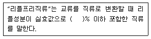
- 10
- 15
- 20
- 25
(정답률: 50%)
94. 기후변화의 심각성을 인식하고 일상생활에서 에너지를 절약하여 온실가스와 오염물질의 발생을 최소화하는 생활은?
- 일상생활
- 녹색생활
- 에너지생활
- 기후변화생활
(정답률: 78%)
95. 정부가 녹색기술의 공동연구개발, 시설장비의 공동활용 및 산·학·연 네트워크 구축 등의 사업을 위한 집적지와 단지를 조성하거나 이를 지원할 때 고려사항이 아닌 것은?
- 산업단지별 산업집적 현황에 관한 사항
- 녹색기술·녹색산업의 사업추진체계 및 재원조달방안
- 기업·대학·연구소 등의 연구개발 역량강화 및 상호연계에 관한 사항
- 산업집적기반시설의 확충 및 우수한 녹색산업의 해외기술 수입에 관한 사항
(정답률: 66%)
96. 수소와 산소의 전기화학 반응을 통하여 전기 또는 열을 생산하는 설비는?
- 수력설비
- 연료전지 설비
- 수소에너지 설비
- 수열에너지 설비
(정답률: 65%)
97. 다음 ( ) 안에 들어갈 내용으로 옳은 것은?
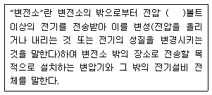
- 2만
- 3만
- 4만
- 5만
(정답률: 48%)
98. 다음 ( ) 안에 들어갈 내용으로 옳은 것은?
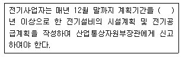
- 3
- 5
- 7
- 10
(정답률: 39%)
99. 금속제 케이블트레이의 종류에 해당하지 않는 것은?
- 전폐형
- 사다리형
- 바닥밀폐형
- 통풍채널형
(정답률: 56%)
100. 신·재생에너지의 종류가 아닌 것은?
- 수력
- 수소에너지
- 해양에너지
- 산소에너지
(정답률: 72%)